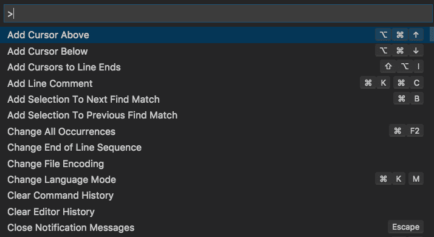

Introduction
To make a computer program, one typically starts by writing the source code in a text editor, compiling it into a binary and finally running the program.
Now all of this can be done if you have:
- a text editor (like Notepad in windows)
- a command line terminal (command prompt) and
- a compiler or interpreter depending on the language.
An Integrated Development Environment (IDE) is an application that provides all these tools in a single place. A typical IDE contains source code editor, terminal, file browser and a debugger. There are many IDEs available out there but I will be installing Visual Studio Code which is free and open-source and developed by Microsoft.
Downloading and Installing VSCode
VSCode is available on Windows, Linux and MacOS platforms. Download the vscode installer for your platform.
In windows, you need to run the installer and follow the wizard, in MacOS, you have to move the application downloaded to the applications folder.
For Ubuntu or other Debian based systems, you can install using apt in the terminal.
~$ cd Downloads
~/Downloads$ sudo apt-get install ./code_1.69.0-1657183742_amd64.deb
Installing C/C++ compilers
Now that you have vscode installed, you will be able to write your code. All you need is a compiler to compile that source code into machine language program which will then run on the computer.
For C/C++, we will be using the GNU Compilers (gcc and g++) on Windows and Linux.
GCC on Linux (Ubuntu or Debian)
-
To verity whether GCC is installed, open a terminal window and enter the command
$ gcc -v -
If GCC isn't installed, update your system's package list and install the GNU compiler tools and the GDB debugger with this command:
$ sudo apt-get update $ sudo apt-get install build-essential gdb
GCC on Windows using MSYS
-
Get the latest version of Mingw-w64 (Minimal GNU for Windows) via MSYS2. Mingw is a toolset which provides GNU softwares for windows including GCC. Download the MSYS2 installer. Open the installer and follow the wizard to complete installation. Check the run MSYS2 64bit now checkbox in the end and click on Finish.
-
In the MSYS command line window, update package databases and base packages.
$ pacman -Syu -
Run "MSYS2 MSYS" from start menu and update the rest of the base packages.
$ pacman -Syu -
Now MSYS2 is ready to install packages. Install mingw-w64 GCC to start compiling:
$ pacman -S --needed base-devel mingw-w64-x86_64-toolchain
Clang on MacOS
-
In MacOS, we will use Clans/LLVM compiler. To check whether it is installed, run the following command in terminal
$ clang --version -
If Clang isn't installed, install the command line developer tools by entering the command in terminal
$ xcode-select --install
Getting familiar with VSCode
VS Code User Interface
VS Code UI is divided into five areas:
- Editor - The main area to edit your files. Multiple editors (files) can be opened side by side.
- Side bar - Contains different views like Explorer, Source Control, Search, Run and Debug, Extensions
- Status Bar - Information about opened project and files you edit.
- Activity Bar - Enables to switch between different views.
- Panels - Contains the integrated terminal, output panel, debug console and problems panel which shows errors and warnings. It can be moved to right.
Tip: Toggle the panel using Ctrl-J or ⌘-J shortcut.
Toggle the integrated terminal, using Ctrl-` or ⌘-` shortcut.
Activity Bar
It lets you switch between different views. Buttons can be added or removed and their order can be changed by dragging them. To hide the view (side bar) from screen, press Ctrl-B on Windows or ⌘-B on MacOS.
Command palette

Anything on vscode can be done with the Command Palette which can be accessed with Ctrl-Shift-P on Windows or with ⌘-Shift-P on MacOS.
Tip: Using Ctrl-P on windows or ⌘-P on MacOS can be used for navigating to any file or symbol by typing its name
Configuring VSCode
Install the extensions
Install C/C++ extension to enable support for C/C++ development which includes syntax highlighting, autocomplete suggestions, automated build and debugging etc.
Installing from command pallete
- Open vscode.
- The extension can also be installed by typing the following command in the command pallete (Ctrl-Shift-P):
ext install ms-vscode
Installing from the Extensions view
- Open VSCode
- Select extensions view from the activity bar in the left
- Search for C/C++ in the extensions view and select the one provided by Microsoft.
- Install the extension by clicking on the install button.
Create projects folder
Create a folder (say projects/) where you'll be saving all your codes and open that folder in vscode.
- Open vscode
- In the menu bar, select the File option.
- Click on Open Folder...
- Browse the system to open the folder you just created. This folder now becomes your workspace.
Writing your first program
Writing the code
-
In the File Explorer view, hover over your folder name and four action icons will appear. Click on the 'New file' icon.
-
Set the filename to
hello.c. -
Write the hello world program in C in
hello.cfile.#include <stdio.h> int main(void) { printf("hello, world\n"); return 0; }When writing the code you'll notice that vscode is showing you autocomplete suggestions and syntax highlighting. This is enabled by that C/C++ extension which you installed earlier.
-
Save changes to your file (Ctrl-S in windows and ⌘-S in macos).
Compilation
Using gcc CLI from vscode terminal (recommended for learners)
-
In the menu bar, click on Terminal followed by New Terminal (Ctrl-` in windows or ⌘-` on macos). This will open a new terminal in vscode.
-
The terminal opens in the folder or directory which you have opened in vscode.
-
The most basic syntax for
gcccli is$ gcc srcfile.c -o outfilesrcfile.cis the source file, which ishello.chere-omeaning 'out' is an option to gcc. It places the compilation output into the filename which follows it i.e.outfile.outfileis the executable of binary file which is the final program that runs on the machine.-
In windows, every executable has a .exe filename extension. So if you are using windows, compile using
$ gcc hello.c -o hello.exeThe output file in windows will thus be
hello.exe -
In Linux or MacOS, there is no need for a filename extension. Compile using
$ gcc hello.c -o helloThe output file is
hello
-
Compilation by shortcut
- In the menu bar, select Terminal followed by Configure Default Build Task...
- Select the default compiler for compiling all C source codes i.e.
gccin this case. - A new
task.jsonfile will be created in.vscodefolder where the default compiler and some other configurations will be set. Compilation can be customized further from this file. Close this file and return tohello.cin vscode. - Now you can compile any C source code by keeping it open in vscode and pressing Ctrl-Shift-B in windows or ⌘-Shift-B in macos.
After compilation, notice in the Explorer view (Ctrl-Shift-E in windows or ⌘-Shift-E in macos if it is not open), the executable file has been created.
Executing the program
- Open the vscode integrated terminal Ctrl-` or ⌘-`.
- Run the executable file from terminal, the output will print just below the prompt:
- In Linux/MacOS:
$ ./hello hello world - In Windows
$ ./hello.exe hello world
- In Linux/MacOS:
Writing more programs
With the workspace setup, you can now create another source file from File Explorer view, write some code, compile it from the terminal or using Ctrl-Shift-B or ⌘-Shift-B and run the program by running filename.exe or simply filename.
e.g. creating a helloagain.c program will be like this:
#include <stdio.h>
int main(void)
{
printf("hello again world!\n");
return 0;
}
and then compilation and execution
$ gcc helloagain.c -o helloagain
$ ./helloagain
hello again world!
References
This article was made possible with the help of Visual Studio code docs Visit this documentation page to learn more about vscode features like debugging and configuration.